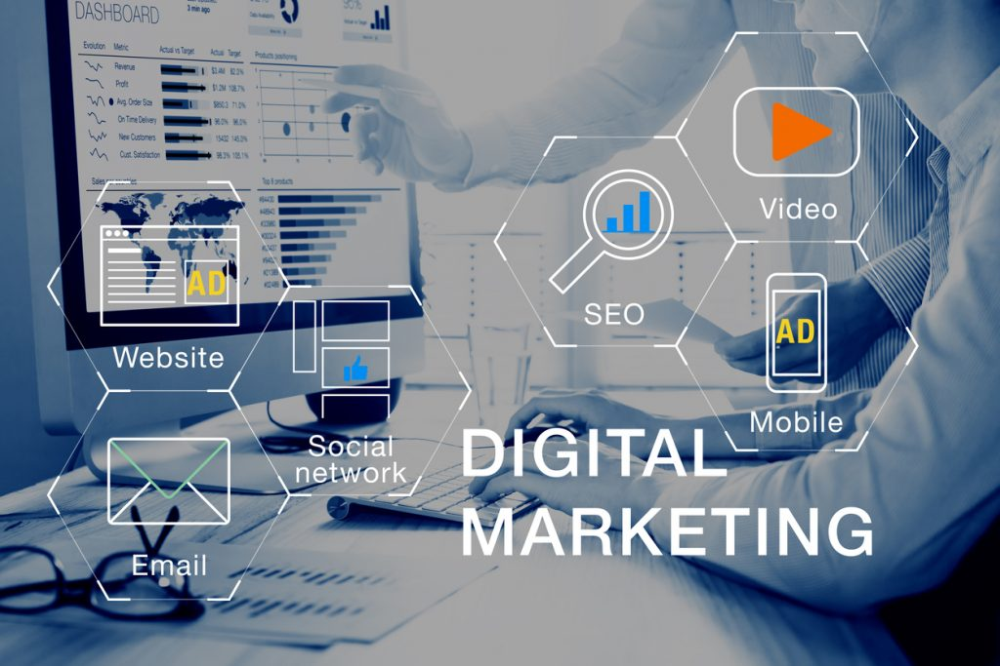
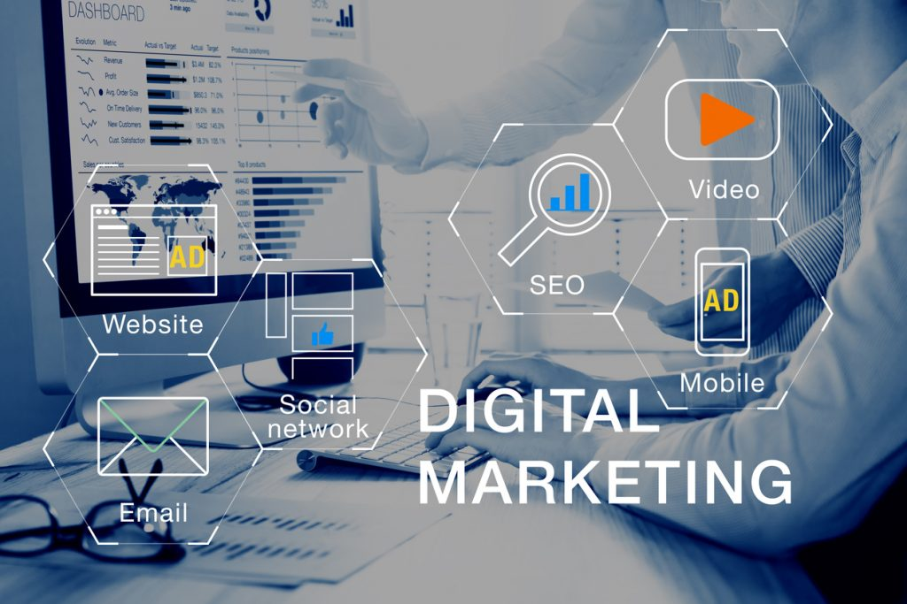

Atualmente, a internet tem sido um meio de comunicação muito utilizado para fins pessoais e profissionais. Pode-se observar que em vista da agilidade e da rapidez, características desse recurso, grandes e pequenas empresas dela vêm fazendo uso para divulgação de seu nome e de seus produtos, ao mesmo tempo que desenvolvem seu marketing on-line. O novo consumidor assiste a menos televisão, ouve menos rádio e opta por ver as notícias pela internet, onde são mais atualizadas em um espaço menor de tempo. A conversa mudou de lugar, as pessoas ficaram mais sociais e vão ampliando seus contatos profissionais. O marketing digital vem para facilitar a vida das pessoas. Em pouco tempo se faz a divulgação e se estabelecem contatos e isso até com um gasto menor, pois basta ter acesso à internet e saber divulgar o produto. O consumidor, por sua vez, terá também uma maior facilidade para dar sua opinião sobre o produto, fazer comparações e compartilhar seu conteúdo. O que passa a ocorrer, então, é uma interação maior e plena entre o consumidor e o proprietário. O consumidor terá mais facilidade para escolher e comprar; a vida de muitos que têm pouco tempo para sair e pesquisar diversos produtos ficará facilitada; de casa mesmo o consumidor fechará negócio. E não será mais necessário estar conectado ao computador para poder ver as informações. Através de celulares móveis já será possível ter todo o acesso necessário. Para uma empresa implementar o marketing na internet, necessita antes de tudo identificar o público-alvo, isto é, utilizadores da internet. A estratégia de marketing na internet deve estar em consonância com a estratégia de marketing definida na empresa, isto é: com o seu posicionamento, com os seus segmentos-alvo e coerência com ações de comunicação que a empresa efetua. Como objetivos, deve criar um canal de vendas, dar a conhecer a empresa e produtos, potencializar a sua imagem e notoriedade, criar valor.
O marketing digital permite uma segmentação de público muito mais precisa. Os dados não mentem. Segundo a Demand Metric, estratégias de marketing digital são até 62% mais baratas que o marketing tradicional e ainda geram três vezes mais possíveis clientes.

Marketing digital são ações de comunicação que as empresas podem utilizar por meio da internet, da telefonia celular e outros meios digitais, para assim divulgar e comercializar seus produtos, conquistando novos clientes e melhorando a sua rede de relacionamentos.

O SEO nada mais é do que a otimização de uma página (ou até do site inteiro) para ser melhor compreendido pelas ferramentas de busca. A conseqüência da utilização das técnicas de SEO é o melhor posicionamento de um site em uma página de resultados de uma busca. Por exemplo, ao pesquisar no Google por “Marketing de Busca”, o primeiro resultado é este site. O SEO é uma prática sem garantias, ou seja, nenhuma empresa ou pessoa pode garantir que seu site fique em primeiro em uma busca, pois o único capaz disto seria o próprio site de busca como o Google ou o Yahoo.

Search Engine Marketing (SEM), permite tirar partido dos links pagos nos motores de pesquisa, esta técnica refere-se a criar o máximo de links patrocinados nos principais motores de busca (como Google ou Yahoo!). Comprar palavras-chave relacionadas com a actividade, com direito a um espaço muito limitado para definir um texto, com o qual se pretende atrair a atenção dos internautas para um link para o site, este meio tem custos mas pode dar muito retorno.
São ações de comunicação que as empresas podem se utilizar por meio da internet, telefone celular e outros meios digitais para divulgar e comercializar seus produtos, conquistar novos clientes e melhorar a sua rede de relacionamentos.
O Marketing Digital engloba a prática de promover produtos ou serviços através da utilização de canais de distribuição eletrônicos para chegar aos consumidores rapidamente, de forma relevante, personalizada e com mais eficiência.